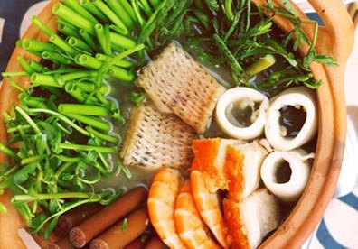

Cùng bắt tay làm thử thôi nào!
Nguyên liệu:
- 400g xương heo
- 200g mắm cá linh
- 100g mắm cá sặc
- 200g tôm tươi
- 200g mực ống
- 200g phi lê cá lóc
- 200g thịt heo quay
- Gia vị: 1 trái cà tím; 1 cây sả; 50g sả băm; 60g bột nêm; 60g đường; Dầu ăn.
- Các loại rau sống: rau nhút, rau đắng, đọt rau muống, bông súng,...
- 1 kg bún
Cách làm
Cà tím rửa sạch, cắt khoanh tròn vừa ăn. Sau đó, bạn cho dầu ăn vào chảo, phi thơm sả băm, khi sả tỏa mùi thơm, thả cà tím vào đảo đều khoảng 3 phút rồi tắt bếp.
Cho mắm cá linh và cá sặc cùng 400ml nước vào, mở lửa vừa nấu sôi. Nấu khoảng 10 phút để cá mềm, dẻo thì tắt bếp.
Lọc toàn bộ nước và cá qua một cái rây, lấy toàn bộ phần nước, loại bỏ cá.
Xương heo chặt miếng. Sau đó rửa sạch rồi cho lên bếp đun sôi để xương ra hết cặn bẩn. Đổ xương ra rồi rửa sạch, tiếp tục cho thêm 2 lít nước sạch vào, mở lửa nhỏ, tiếp tục hầm xương trong 20 phút.Đập dập cây sả. Cho hỗn hợp nước mắm, sả cây, cà tím sả băm cùng 60g bột nêm và 60g đường vào nồi nước dùng, nấu thêm 10 phút nữa thì tắt bếp
Sau đó, bạn sơ chế và làm sạch các nguyên liệu để ăn lẩu.
Rửa sạch, sơ chế, cắt nhỏ cá lóc, tôm, mực.
Cắt nhỏ, rửa sạch các loại rau sống ăn kèm.